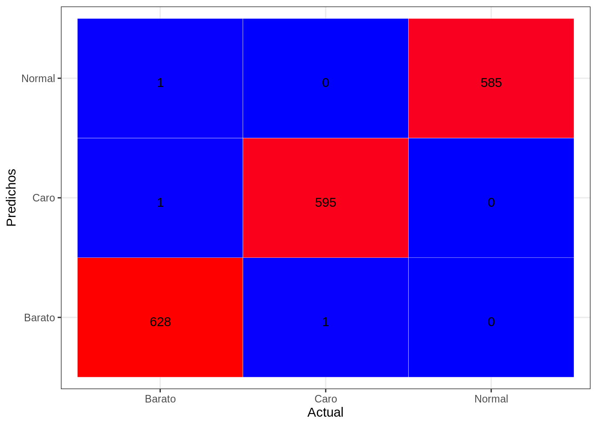
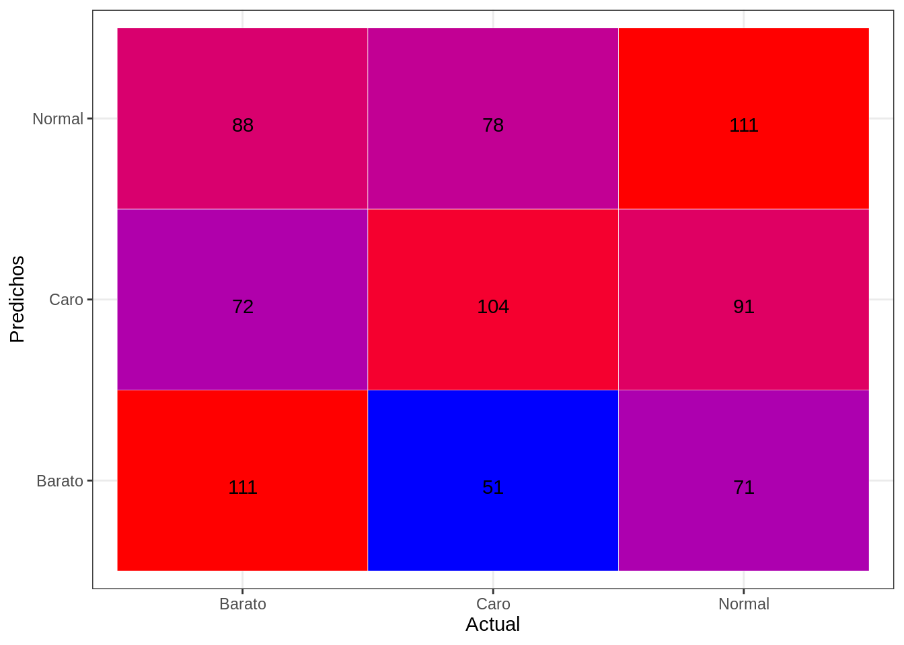

Cargamos los datos:
df_total <- read.csv(file = 'dataset/dataset1.csv')#v = discretize(df_total$SalePrice, breaks = 2, onlycuts =TRUE)
#df_total$GrupoPrecio = cut(df_total$SalePrice, v)
#levels(df_total$GrupoPrecio) = c('barato', 'caro')group <- c('LotArea','TotRmsAbvGrd','MasVnrArea','BsmtFinSF1','BsmtUnfSF','TotalBsmtSF','GrLivArea','GarageArea','WoodDeckSF','GrupoPrecio')
#####df <- df_total %>% select(LotArea, BsmtFinSF1, BsmtUnfSF, GrLivArea, KitchenAbvGr, TotalSF, GrupoPrecio)
df <- df_total %>% select(group)summary(df)## LotArea TotRmsAbvGrd MasVnrArea BsmtFinSF1
## Min. : 7.294 Min. : 3.000 Min. : 0.0 Min. :0.000
## 1st Qu.: 8.914 1st Qu.: 5.000 1st Qu.: 0.0 1st Qu.:0.000
## Median : 9.148 Median : 6.000 Median : 0.0 Median :5.919
## Mean : 9.084 Mean : 6.423 Mean : 100.2 Mean :4.227
## 3rd Qu.: 9.349 3rd Qu.: 7.000 3rd Qu.: 161.0 3rd Qu.:6.600
## Max. :10.954 Max. :14.000 Max. :1600.0 Max. :7.736
## BsmtUnfSF TotalBsmtSF GrLivArea GarageArea
## Min. :0.000 Min. : 0 Min. :6.256 Min. : 0.0
## 1st Qu.:5.412 1st Qu.: 796 1st Qu.:7.027 1st Qu.: 326.0
## Median :6.165 Median : 990 Median :7.273 Median : 480.0
## Mean :5.643 Mean :1048 Mean :7.258 Mean : 472.2
## 3rd Qu.:6.693 3rd Qu.:1290 3rd Qu.:7.458 3rd Qu.: 576.0
## Max. :7.757 Max. :2630 Max. :8.209 Max. :1488.0
## WoodDeckSF GrupoPrecio
## Min. : 0.00 Barato:862
## 1st Qu.: 0.00 Caro :863
## Median : 0.00 Normal:863
## Mean : 92.25 NA's : 1
## 3rd Qu.:168.00
## Max. :857.00head(df)## LotArea TotRmsAbvGrd MasVnrArea BsmtFinSF1 BsmtUnfSF TotalBsmtSF GrLivArea
## 1 9.042040 8 196 6.561031 5.017280 856 7.444833
## 2 9.169623 6 0 6.886532 5.652489 1262 7.141245
## 3 9.328212 6 162 6.188264 6.075346 920 7.488294
## 4 9.164401 7 0 5.379897 6.293419 756 7.448916
## 5 9.565284 9 350 6.486161 6.196444 1145 7.695758
## 6 9.555064 5 0 6.597146 4.174387 796 7.217443
## GarageArea WoodDeckSF GrupoPrecio
## 1 548 0 Caro
## 2 460 298 Normal
## 3 608 0 Caro
## 4 642 0 Barato
## 5 836 192 Caro
## 6 480 40 Baratodf <- df[!(is.na(df$GrupoPrecio)),]
(get_cols_nan(df))## character(0)#df <- fillNanWithMean(df)Separamos el dataframe en dos partes, una parte para el entrenamiento y otra para el test
Ejecutamos el modelo knn con el parametro k = 13, que nos da la siguiente matriz de confusión
pr_train <- knn(XTrain, XTrain, cl = YTrain, k=1)
pr_test <- knn(XTrain, XTest, cl = YTrain, k=1)Evaluamos el modelo:
tab_train <- table(pr_train, YTrain, dnn = c("Actual", "Predichos"))
tab_test <- table(pr_test, YTest, dnn = c("Actual", "Predichos"))
accuracy(tab_train)## [1] 99.83435knn_train_error <- calc_error_rate(predicted.value=pr_train, true.value=YTrain)
(knn_train_error)## [1] 0.001656543accuracy(tab_test)## [1] 41.95624knn_test_error <- calc_error_rate(predicted.value=pr_test, true.value=YTest)
(knn_test_error)## [1] 0.5804376draw_confusion_matrix(tab_train, "Actual", "Predichos")
draw_confusion_matrix(tab_test, "Actual", "Predichos")
```